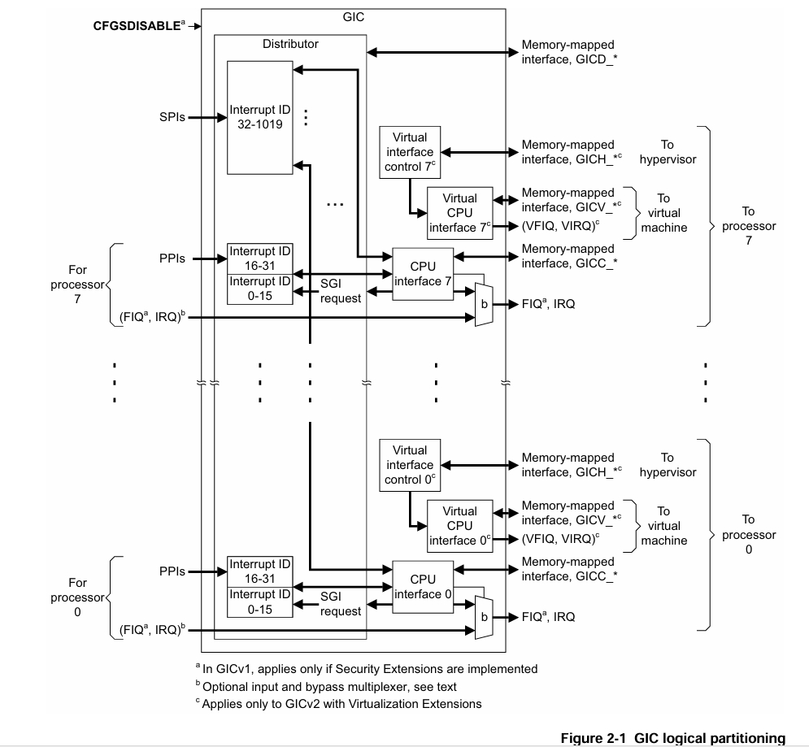

ARM-Gicv2 第二章学习
GIC 组成
分发器 Distributor
分发器的功能是定义优先级和将中断分发给GIC的CPU结构，其寄存器以 GICD_ 前缀识别。
CPU 接口
介绍
每个 CPU 接口层提供优先级掩码和抢占处理，其寄存器以 GICC_ 前缀识别。
虚拟 CPU 接口
虚拟接口控制器
最主要部分是一套寄存器，包含一个当前虚拟机正在处理和等待的中断表。一般情况下，这些寄存器被运行在此处理器上的Hypervisor管理，以 GICH_ 前缀识别。
虚拟 CPU 接口
每个虚拟 CPU 接口对于虚拟中断提供物理信号对于连接到的处理器。ARM 处理器虚拟化扩展将这些中断信号发送到当前处理器正在执行的虚拟机上。虚拟CPU接口的寄存器可以被虚拟机访问，提供中断控制和状态信息。格式类似于 CPU 接口，以 GICV_ 前缀识别。
在实现了虚拟化扩展的GIC中，Hypervisor有义务在切换虚拟机时切换 GICH 中存储的信息。
图示

Distributor
功能
分发器集中所有的中断源，确定每个中断的优先级，并为每个CPU接口转发具有最高优先级的中断到该接口，以进行优先级屏蔽和抢占处理。
可配置参数
- 全局启用中断分发。
- 开关每个中断。
- 设置每个中断的优先级。
- 设置每个中断的目标处理器。
- 设置每个外设中断的触发方式（边沿、电平）
- 设置每个中断的组。
- 路由 SGI 中断到目标处理器。
中断号
介绍
中断在 GIC 以 中断号进行标识，每个 CPU 接口可以看到 1020 个中断。Banking 机制增加了分发器支持的中断。分配规则
GIC 分配 0 - 1019 以如下规则： - 32-1019 被 SPI 使用
- 0 - 31 被私有中断使用（私有针对于CPU接口），这些中断在分发器中 banking，其中 0-15 被 SGI 使用，16-31 被 PPI 使用。
每个连接到GIC的处理器通过写 GICD_SGIR 来发送 SGI 中断，在分发器中，一个 SGI 通过源CPUID，目标CPUID，中断号独立识别。在CPU接口中，接口在向CPU发送中断ID时会附加源CPUID来独立识别。
CPU 接口
功能
每个CPU接口提供处理器连接到GIC的接口，当CPU接口启用时，CPU接口为处理器取出最高优先级的等待中断并且确认该中断优先级是否足够有效使其向处理器发送中断请求。CPU可以在任意时刻读取GICC_HPPIR寄存器来看当前在CPU接口等待的最高优先级中断号。
可配置参数
- 启用向处理器发送中断请求信号
- 确认一个中断
- 表明一个中断的处理完成
- 设置处理器中断优先级掩码
- 定义处理器抢占策略
- 确定处理器待决的最高优先级中断。
CPU 中断处理
CPU 确认中断通过读取IAR寄存器来进行，读取的结果有两种：
- 真实中断号
- 虚假中断号
当 CPU 确认中断后，分发器将该中断的状态设置为活跃、活跃和等待。此时 CPU 接口可以发起其他中断给处理器，来进行抢占。
当 CPU 完成中断处理后，处理器写处理器接口寄存器来表明完成，完成分为两个过程：
- 优先级下降，意味着刚才处理中断的优先级无法再影响别的中断的发出了。
- 中断关闭，意味着分发器移除了中断的活跃状态。
在 GICV2 中，两个过程是否同时发生取决于 GICC_CTLR 寄存器的控制。